Århus -
Wikinger Museum im Keller
Museum mit Originalausgrabungsstätte
G - Århus - Museum in der ehemaligen Nordea Bank - Letztes Update 24.09.2025
Navidaten: 56.1565753 10.2091214 oder: Skt. Clemens Torv 6, 8000 Århus C
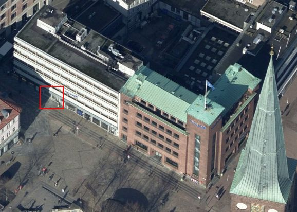
Dies ist ein Luftfoto vom 30.03.2021 von Skråfoto, welches das Museum zeigt. Skråfoto ist eine Webanwendung, die von Klimadatastyrelsen weltweit kostenlos bereitgestellt wird - Freie Nutzung unter Beachtung der Lizenz: CC BY 4.0. Die Aufnahmen werden alle zwei Jahre erneuert und neben einer Senkrechtaufnahme wird ein Schrägbild aus jeder Himmelsrichtung angeboten, das man über eine Adresssuche aufrufen kann.
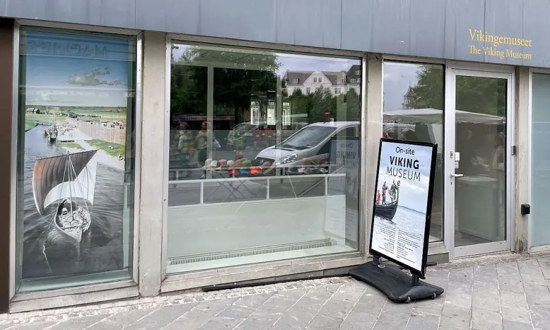
Eigenes Foto 08.06.2022Das kleine Museum "Vikingemuseet" befindet sich in Århus im Untergeschoss der ehemaligen Nordea Bank - unmittelbar am Dom. Früher war der Zugang während der Öffnungszeiten der Bank möglich und kostenfrei.
Die Bank ist seit geraumer Zeit geschlossen, das Museum weiter zugänglich, aber inzwischen wurde im Keller / im Museum ein Automat aufgestellt, worüber man aufgefordert wird den Eintritt von 30 DKK mit seiner Geldkarte zu bezahlen - hier kann man die Öffnungszeiten abrufen.
Im Internet finden sich aktuelle Informationen zu dem Museum auch in deutscher Sprache - hier.
Inzwischen wurde die ursprüngliche Ausstellung, die immerhin über 40 Jahre auf dem Buckel hatte, im Jahr 2008 umgestaltet und neu geöffnet. Zum einen waren Abnutzungserscheinungen, aber auch die Ergebnisse von neuen Ausgrabungen in der Mitte der 1990er Jahren der Grund. Gezeigt wird u.a. ein Modell von Århus zur Zeit Harald Blauzahns (*um 910 - 01.11.985/86) um 980 n. Chr (siehe links). Dazu gibt es eine Toninstallation durch die man sich in verschiedenen Sprachen - auch in Deutsch - die Geschichte von Århus erzählen lassen kann. In den Räumlichkeiten finden sich Originale und Nachbildungen (z.B. der Runenstein von Hørning), die die Texte der Infotafeln bereichern.
Die Funde spiegeln das Leben einer betriebsamen Handelsstadt von ihren Ursprüngen um 900 bis ins Spätmittelalter um 1400 wieder. Unter anderem ist der Nachbau eines Grubenhauses, sowie ein Stück des Originalbohlenweges entlang der ehemaligen Innenseite des Walles zu sehen.
Im Rahmen meiner 2022er Jütland Wikinger Tour war ich am Mittwoch, 08.06.2022, in dem kleinen Museum im Kellergeschoss der ehemaligen Nordea Bank. Dabei habe ich diese Fotos gemacht.
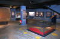 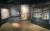 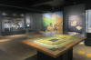 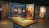 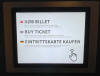 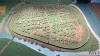 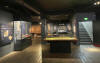 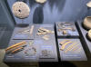


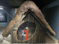 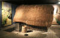 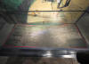 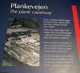 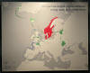 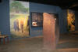 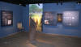


Quasi als Begleitung für diese Ausstellung gibt es das Buch - in deutscher Sprache - "Aros - das Århus der Wikinger", 1. Ausgabe 2006, Moesgård Museum, 123 Seiten, reich bebildert. Es sollte im Shop des MOMU - Moesgård Museum noch erhältlich sein. Es werden darin aber auch weitere Orte / Funde behandelt und die Geschichte der Wikinger allgemein abgehandelt.
Infos zu den frühen Ausgrabungen von 1963/64
Die frühen Ausgrabungen wurden vom damaligen Prähistorischen Museum Moesgård - heute MOMU - mit finanzieller Hilfe der Stadt durchgeführt und die Bauherren eines Bürogebäudes am Ort - Andelsbanken und die Versicherungsgesellschaft MLU - zeigten den Grabungsplänen großes Entgegenkommen.
Die Quellen zur frühesten Stadtform von Århus sind leicht zu überschauen. Die älteste, ein Synodenbericht aus dem Jahr 948, erwähnt nur den Namen des Bischofs der Kirche von Århus, Reginbrand. Aus den Jahren 965 und 988 kennt man deutsche kaiserliche Privilegien für die örtliche Kirche. Ein Jahrhundert später taucht Århus bei Adam von Bremen als Civitas und verkehrsmäßiger Knotenpunkt für östliche und nördliche Seeverbindungen auf. Von der Bedeutung des Ortes im 11. Jahrhundert zeugt außerdem eine Anzahl von Runensteinen (aufgestellt damals in der Runenhalle des Prähistorischen Museum Moesgård - heute im MOMU) aus der Zeit um 1000. Gegen Ende der Wikingerzeit, d.h. um 1040 herum wurden in Århus Münzen geschlagen. Angelsächsische Münzmeister leisteten diese Arbeit, und die Inschriften sind nicht in Runeninschrift, sondern in lateinischer Schrift abgefasst. Der Text ist natürlich sehr kurz gehalten. Erwähnt werden die Königsnamen Hardeknud und Magnus der Gute, sowie die Namen der Münzpräger Ciadwine und Lifsig, und schließlich - zum ersten Mal auf heimischen Boden - der ursprüngliche Namen der Stadt - AROS - der Aumündung bedeutet. Weiter wird bei Adam von Bremen von einem Angriff des norwegischen Königs Harald Hårdråde um 1050 berichtet. Nach 1060 wurde die Stadt Stiftsort und somit wieder Bischofssitz, als König Sven Estridsen die dänische Kirche neugestaltete. Ein etwas reicherer, aber noch sporadischer Quellenstrom fließt im 12. Jahrhundert - hier sei nur ein slawischer Angriff auf die Stadt im Jahre 1158 erwähnt. Nach 1200 vermehren sich die Nachrichten und vermitteln einigermaßen einen Zusammenhang in der Überlieferung. Das ist sogleich auch die Zeit einer Historischen Wende: die Frühstadt entwickelt sich zur hochmittelalterlichen Handelsstadt mit städtischer Verfassung.
Die Quellen erlauben also den Schluss, dass am Orte eine städtische Bebauung von einer gewissen Bedeutung seit 948 vorhanden war. Jede archäologische Kenntnis davon - abgesehen von Einzelfunden - fehlte lange, vor allem, weil die ältere Stadtarchäologie sich vornehmlich mit kirchlichen Gebäuden aus der Zeit nach 1200 befasste.
So wusste man nicht mit Sicherheit, wo man die Lage der ältesten Stadt suchen sollte. In den sechziger Jahren führte man daher eine Reihe von Ausgrabungen durch (insgesamt 900 m² bei drei Grabungsstellen), die in entscheidender Weise neues Material zu einem genaueren Verständnis der ältesten Geschichte der Stadt lieferten.
Zieht man die archäologischen Ergebnisse in die Überlegungen mit ein, lässt sich folgender Überblick über die Entwicklung der Stadt in der Wikingerzeit geben:
Ursprünglich bot sich die Landschaft als ein zwischen Hügelzügen liegendes sumpfiges Tal dar, durch das die Au dem Meer zufloss. In der Nähe des Strandes breitete sich nördlich der Au eine große sandige Fläche aus, und eine entsprechende Sandfläche lag eben westlich der ersten. Auf der ersterwähnten sandigen Fläche entstand um das Jahr 900 die erste Århusansiedlung, die von einem Halbkreiswall umgeben wurde, genau wie bei den bekannten wikingerzeitlichen Städten Birka und Haithabu. Vielleicht stand die Königsmacht hinter der Stadtgründung und dem Wallbau. Hinter dem Wall blühte nun Handel und Handwerk; aber gemessen an heutigen Verhältnissen handelte es sich doch nur um eine kleine Ortschaft, die nur ungefähr 200 m von einem Ende bis zum anderen reichte und mit einer Einwohnerzahl, die man sicher nicht über 1000 ansetzen darf. Im 11. Jahrhundert erwies sich der Wall scheinbar als zu eng, denn um 1070 herum wurde der älteste Dom der Stadt, St. Nicolai, außerhalb des Walles auf der erwähnten Sandfläche westlich der Stadt errichtet, und die Ausgrabungen haben gezeigt, dass zu ungefähr dem gleichen Zeitpunkt hier eine Vorstadt angelegt wurde. Zu Beginn des 12. Jahrhunderts wurde die St. Olufs Kirche nördlich des Stadtwalls erbaut, und auch diese könnte auf eine frühe Vorstadtsiedlung deuten.
Bei der Ausgrabung von Clemenstorv 6 wurde 2 - 3 m unter dem heutigen Straßenniveau ein kleiner Ausschnitt von der ältesten Stadt aus dem 10. Jahrhundert gefunden. Man darf annehmen, dass verschiedene Haustypen in der Stadt vertreten waren, ähnlich wie in Haithabu; aber an diesem Ort fand man hauptsächlich Spuren von einer kleinen Gruppe von Grubenhäusern. Grubenhäuser sind bemerkenswert dadurch, dass sie teilweise in die Erde eingegraben und durchweg von äußert geringer Größe sind. Insgesamt konnten sieben derartige Häuser untersucht werden; eines aber ist besonders erwähnenswert, da es durch ein Feuer zerstört wurde, so dass ein Teil des Inventars auf dem Fußboden hinterlassen worden ist. Auch das Bauholz ist zum großen Teil verkohlt und daher nicht verrottet, sondern in bedeutendem Umfang erhalten. Das Haus war viereckig, ungefähr 3 ½ m lang, etwas über 2 m breit, und ungefähr 1 m tief in die Erde eingegraben. Die Wände bestanden aus zugehauenen, senkrecht stehenden Bohlen, der Holzfußboden war über Querleisten gelegt, und man darf vermuten, dass das Dach ein rohrgedecktes Satteldach war. Das Feuer hat natürlich einen wesentlichen Teil der Einrichtung verzehrt, trotzdem blieb noch vieles übrig. Der Herr des Hauses hat über viele Werkzeuge zur Holzbearbeitung verfügt wie Hobel, Hohlmesser und Bohrer. Wahrscheinlich hat er ein Pferd gehabt, denn es wurden Sporen und Riemenschnallen gefunden. Vielleicht kennt man sogar den Namen des Hausherrn, denn auf einem gut erhaltenen Knochenkamm war in Runenschrift der Name HIKUIN eingeritzt. An traditionellen Frauengeräten wurden u.a. zwei Flachshechel, drei Spinnwirtel und Teile eines senkrecht stehenden Webstuhls ausgegraben; die Hausfrau hat auch Schmuckstücke ihr eigen genannt, eine verzierte, bronzene Spange und viele Perlen.
Der Haushalt hat über Tontöpfe und Holzschalen verfügt, und es wurden auch verkohlte Überreste von Roggen, Gerste und Erbsen ausgegraben. Einige verkohlte Textilreste erwiesen sich aus Wolle bestehend. Nach dem gesamten Inventar zu urteilen, scheint das niedergebrannte Haus als Wohnung eines Handwerkers, eines Spezialisten für Holzgeräte, und seiner Familie gedient zu haben, und die überlieferten Reste deuten auf einen gewissen Wohlstand hin.
In einigen von den übrigen Grubenhäusern wurden Reste von Erdbänken entlang einer oder mehreren Wänden gefunden, und in einigen Fällen konnten auch Spuren von Feuerstätten nachgewiesen werden, normalerweise in einer Ecke. In einem Haus befand sich ein senkrecht stehender Webstuhl, und ein anderes vermittelt durch seinen Inhalt an Mahlsteinen usw. den Eindruck eines Vorratshauses oder ähnlichem. Aufgrund ihres verschiedenartigen Inhaltes ist es also gut möglich, dass die ganze Gruppe einem einzelnen oder zwei Haushalten angehört haben kann. Wie erwähnt darf man vermuten, dass die wikingerzeitliche Stadt auch aus anderen Bauten als gerade Grubenhäusern bestanden hat; aber praktisch und zahlreich sind sie sicher gewesen, denn man fand sie auch in dem östlichen Stadtviertel in der Nähe des Strandes, genauer gesagt unter der heutigen Århus Katedralsskole.
Zwischen den Häusern wurden angelegte Straße und Wege nicht beobachtet, aber entlang der Innenseite des Walles verlief eine mit Holzschwellen befestigte Straße, an der die Benutzung von Wagenrädern deutlich bei der Freilegung abgelesen werden konnte. Diese Wallstraße muss von großer Bedeutung gewesen sein, denn als der Holzweg einmal in Verbindung mit einer Wallerweiterung zerstört worden war, wurde sofort eine mit Steinen gepflasterte Wallstraße in höherer Lage angelegt.
Aros lag auf der Landspitze zwischen der Au und dem Meer und wurde von einem Stadtwall beschützt. Es hat sich bislang keine Möglichkeit geboten, Ausgrabungen vorzunehmen, die in Einzelheiten die Konstruktion der Befestigung klarlegen konnte. Deutlich erkennbar ist nur, dass sie nach der ersten Aufführung einige Male erhöht und erweitert worden ist. Im Jahre 1916 konnte in Verbindung mit einer Grundstücksaushebung beobachtet werden, dass der Wall ungefähr 4 m hoch gewesen ist, auch weiß man, dass sich vor ihm ein Wallgraben befunden hat.
Heutzutage bemerkt man den wikingerzeitlichen Wall nicht unmittelbar im Stadtbild, aber er spiegelt sich immer noch in einer Reihe von Straßennamen in dem Stadtviertel um den Dom wieder: Borgporten (Das Burgtor), Volden (Der Wall) und Graven (Der Graben). Vergleicht man die spärlichen archäologischen Beobachtungen, kommt man zu dem Ergebnis, dass der Wall in einem unregelmäßigen Halbkreis die Stadt gegen das Land hin abgeschirmt hat. Am Meer entlang hat man keinen Wall nachweisen können, aber vielleicht wurde der Strand ähnlich wie in Haithabu durch eine Pfahlsperre im Wasser geschützt.
Zweifellos hat man in der Wikingerzeit gute Gründe gehabt, die Stadt zu beschützen, denn es waren unruhige Zeiten. Gegen Ende der Periode, im Jahre 1043, führten König Sven Estridsen (*um 1020 - 28. April 1076) und Magnus der Gute (*um 1024 - 25. Oktober 1047) eine große Seeschlacht bei Århus, und wie bereits erwähnt wurde die Stadt um 1050 herum von Harald Hårdråde (*1015 in Norwegen - 25. September 1066 bei Stamford Bridge) überfallen. Es ging hart zu, denn es ist bekannt, dass die Kirche bei dieser Gelegenheit in Brand gesetzt wurde.
Im frühen Mittelalter, im Jahre 1132, wurde Århus als Kriegshafen benutzt, und 1158 heißt es bei Saxo Grammaticus: Über dieses Jahr kann gesagt werden, dass Århus überaus schwer unter Wikingerüberfällen litt. Schließlich berichtet das Testament des Bischofs von Århus, Svend I., aus dem Jahre 1183 von heidnischen Überfällen in Küstengebieten. Wahrscheinlich können diese gefürchteten Heiden mit den Wenden identifiziert werden.
Eine Stadt muss - im Gegensatz zum Dorf - Handwerk und Handel als Haupterwerb haben; beide diese Wirtschaftszweige lassen sich im Fundmaterial des wikingerzeitlichen Århus nachweisen. Zum Beispiel ist die Anwesenheit des Kammherstellers, des Holzschnitzers und des Goldschmieds durch Geräte oder halbfertige Produkte nachgewiesen. Die Kämme der Wikingerzeit wurden aus Hirschgeweih hergestellt, und in Haithabu hat man aufgrund der umfassenden Untersuchungen Betrachtungen darüber anstellen können, wie viele Kämme in der Stadt hergestellt wurden. Es handelt sich dabei um ungefähr 2500 Stück pro Jahr. Nun war Haithabu natürlich bedeutend größer als Århus, aber die Zahl deutet doch an, welche gesellschaftliche Funktion die Städte der Wikingerzeit einnahmen. Bei mehreren Handwerkszweigen handelte es sich wirklich um Massenfabrikation.
Der Handelsumsatz hat auch seine Spuren hinterlassen. Man hat in Århus importierte Schleifsteine und Kochkessel aus Speckstein von Norwegen gefunden, außerdem Tongefäße, die zweifellos in den Gegenden der südlichen Ostseeküste hergestellt worden sind. In der Eifel in Deutschland fand eine umfassende Fabrikation hervorragender Mahlsteine statt, hergestellt aus einem besonders porösen Basaltstein, und auch die fand man in Århus.
Die oben erwähnte Münzprägung in Århus um 1040 herum muss selbstverständlich auch in Zusammenhang mit dem Handel der Stadt gesehen werden, sie gehört zum ältesten Münzwesen in Dänemark. Knud der Große (*etwa 995 - 12. November 1035) führte nach englischem Vorbild im Jahr 1020 das Münzwesen in Dänemark ein; scheinbar hat er es so gründlich getan, dass Münzen auch später die Grundlage des Handelsumsatzes bildeten. Vor dem Jahr 1020 musste vor jeder Handelstransaktion das vereinbarte Quantum Silber genau abgewogen werden, mittels besonderer Gewichte und einer kleinen zusammenklappbaren Waage, die der Kaufmann immer bei sich haben konnte. Eine derartige Waage und entsprechende Gewichte, die in Århus gefunden worden sind, öffnen einen Blick in die konkrete Handelssituation der Wikingerstadt.
Über die Art der Nahrungsmittel kann man einen gewissen Eindruck durch die Funde der Tierknochen und erhaltenen Pflanzenresten in den Ausgrabungen gewinnen. Rind und Schwein wurden in ungefähr gleicher Menge verzehrt, während die Nachfrage nach Schafs- oder Lammfleisch kaum so groß gewesen ist. Wild wurde nur in geringem Umfang im Haushalt verwendet, während in der nahen Bucht zielbewusst Fischerei betrieben wurde, namentlich großer Dorsch wurde gelandet. In den Grubenhäusern wurden vereinzelt kleine Haufen Korn, besonders Roggen, aber auch Gerste gefunden, und die Mahlsteine erzählen, dass es zu Mehl gemahlen wurde, um dann in verschiedener Weise im Haushalt gebraucht zu werden.